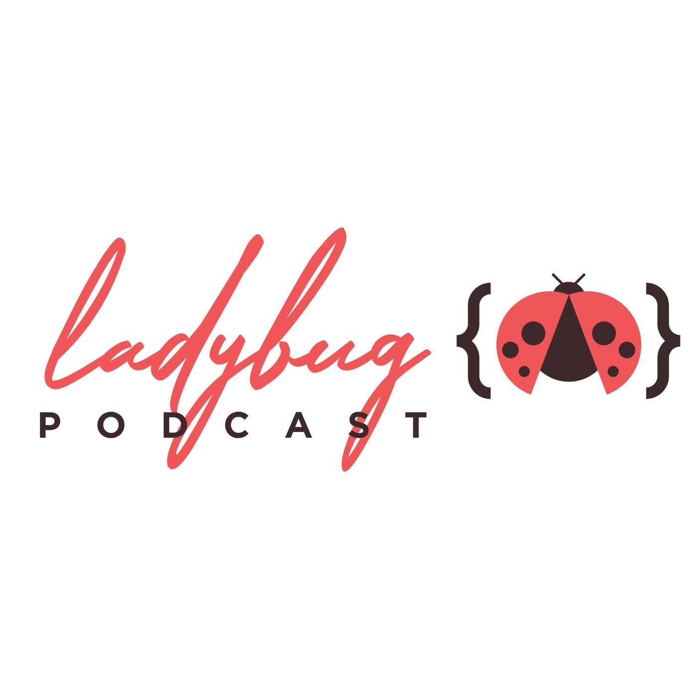
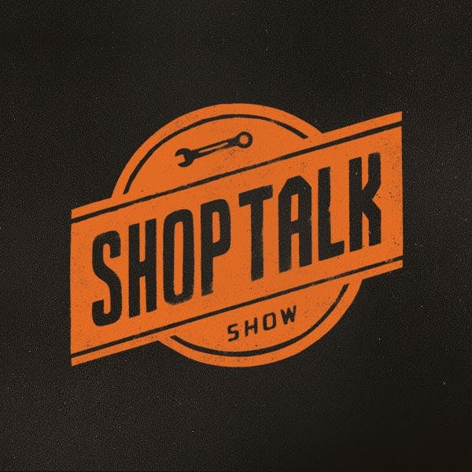
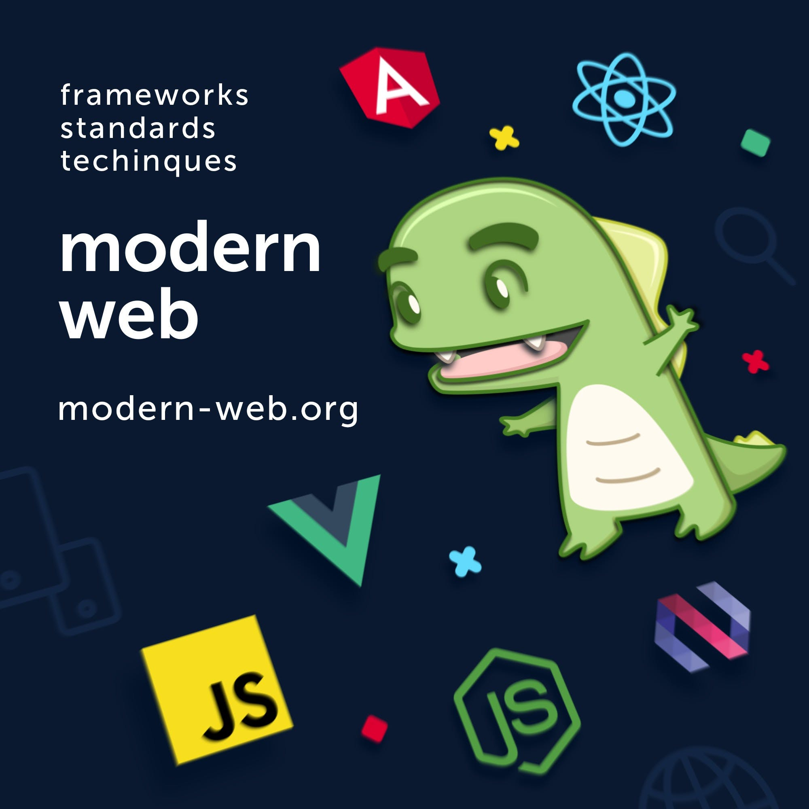
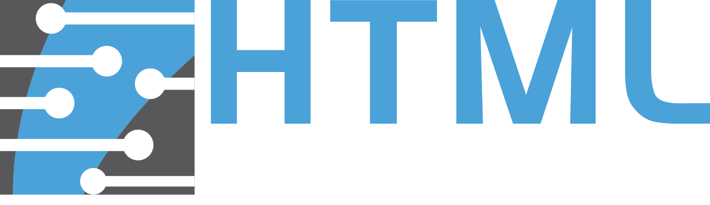

Ladybug Podcast
I adore the ladybug podcast. It was one of the first tech podcasts that I ever listened to, and I found out about it on tech Twitter after seeing a lot of posts from or directed at Kelly ( @kvlly ). The podcast can be understood by someone with surface-level knowledge of development since it seems there’s always one host who is new to whatever topic is being discussed. I love this aspect of the podcast because it prevents anyone listening from feeling like the only one who might be a little lost. Up until listening to ‘The Ladybug Podcast’ I had mostly only listened to tech podcasts with men as hosts. Listening to information from people of all different backgrounds (race, sex, nationality, and gender) is honestly awesome. The latest podcast that I listened to from ‘The Ladybug Podcast’ was their episode on typescript and it really motivated me to start using it and also taught me all about what typescript is. I’m hoping that ‘The Ladybug Podcast’ keeps on putting out great content like they have been because I can’t get enough of it.
Twitter Handles
Website
ladybug.devChangelog
The changelog podcast(s) is so well executed and their content is plentiful. I’m personally subscribed to their master feed on Spotify where they have 8 different podcasts featured which you can view here. I listen to all of their podcasts and even when I don’t know what they’re talking about I pick up on bits and pieces of knowledge as I listen, also all of the hosts are charismatic and fun to listen to. My favorite changelog podcasts are ‘The Changelog’, ‘JS Party’, and ‘Practical AI’ as these are the podcasts that I understand the most. The more I do web development the more everything being talked about in these podcasts seems to click and it just trends towards more fun to listen to. I’m excited to see what new podcast ideas the changelog has in store.
Twitter Handles
- @jerodsanto
- @shortdiv
- @adamstac
- @feross
- @Wattenberger
- @kbal11
- @nicknisi/li>
- @mikeal
- @b0neskull
- @nomadtechie/li>
Website
changelog.comSyntax
Wes Bos and Scott Tolinski are two of the most charismatic developers on the internet. They’re each great teachers with Wes making his own free and paid courses such as Javascript30. Scott runs Level Up Tutorials which has a ton of courses to take ranging from adobeXD to GitHub, to NodeJS and quite a few more. The podcast is incredibly light-hearted and fun to listen to. Topics are talked about invitingly with comedy that doesn’t take away from the learning but enhances it. I can’t recommend this podcast enough so please go and give them a listen.
Twitter Handles
Website
syntax.fmShoptalk Show
Like Syntax, this podcast is run by two really fun guys Chris Coyier and Dave Rupert. This podcast centers around web design and UX. It’s a great podcast for those who aspire to become better web developers. There are a lot of good podcasts that center on programming this and programming that but this podcast balances all of those out by giving you some solid design knowledge after all what good is being able to write js for a website if it looks like hot garbage and isn’t accessible. I learn so much listening to this podcast as I’m sure you will too.
Twitter Handles
Website
shoptalkshow.comModern Web
Frameworks are a huge part of present-day web development. This podcast dives in on frameworks most commonly used like: React, Angular, and Vue but also talks about emerging frames such as Svelte. I haven’t started heavily using frameworks yet so when I listen to this I try and absorb what I can in hopes that it will help me pick up a javascript framework faster and better. I loved the episode titled ‘Web Components Are Lit’. I was just starting to learn about using web components and this really sold me on the idea so definitely give it a listen!
Twitter Handles
Website
thisdot.coHONORABLE MENTION
HTML all the things
Matt Lawrence and Mike Karan have witty and exciting conversations about web design and the tech industry as a whole. This podcast is newer to me but I wanted to give it my honorable mention because it keeps growing on me every time I listen to a new episode. I liked the episode ‘Is Work-Life Balance Dead’ where they talked about (you guessed it) work-life balance. I think if anything you should follow their Twitter account @htmleverything where they talk about all things tech and you’ll find them interacting with other awesome members of the community.
Twitter Handles
Website
htmlallthethings.comClosing Words
Thank you for taking the time to read and learn about all of these incredible podcasts. They weren’t in any order and I truly like them all for different reasons. Again you can comment below with any thoughts or suggestions for other podcasts or you can contact me @MitchellDirt.
Cover Photo by Tommy Lopez from Pexels.